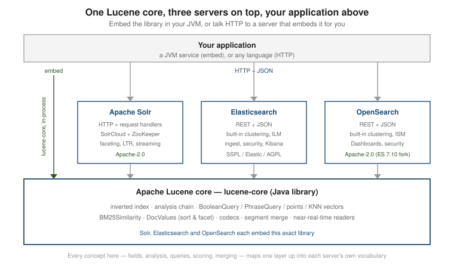

Lucene vs. Solr vs. Elasticsearch vs. OpenSearch
|
This content was generated with the assistance of AI and should be verified against the official documentation before being relied on in production. |
Apache Lucene is the search engine inside Apache Solr, Elasticsearch and OpenSearch: the same inverted index, analysis chain, query evaluation and BM25 scoring runs in all four. What differs is everything around the library — whether you get a JAR or a clustered server, a Java API or a REST protocol, and who carries the operational burden. This page contrasts the four so you can pick the right layer to build on.
The comparison is not only from documentation. The same ten-book catalogue used across this section was loaded into Lucene directly, into Apache Solr 9.11.0 and into Elasticsearch 9.5.6 (both from their official Docker images), and the same search was run in each; the results are shown below. OpenSearch was not run for this page. It keeps Elasticsearch’s request format and is covered by the description and the links.
The four options at a glance
| Apache Lucene | Apache Solr | Elasticsearch | OpenSearch | |
|---|---|---|---|---|
What it is |
Embedded Java library, in-process |
Search server around Lucene |
Search server around Lucene |
Search server around Lucene (fork of Elasticsearch 7.10) |
Interface |
Java API, direct method calls |
HTTP + JSON/XML, named request handlers |
REST + JSON, uniform endpoints |
REST + JSON (Elasticsearch 7.10 baseline, now diverging) |
Distribution |
Single JVM; you build sharding / replication |
SolrCloud + Apache ZooKeeper, or a standalone node |
Built-in cluster coordination |
Built-in cluster coordination |
Batteries included |
None — index, query and scoring only |
Faceting, dismax, suggesters, LTR, streaming expressions |
ILM, ingest pipelines, security, Kibana, ES|QL |
ISM, ingest pipelines, security, OpenSearch Dashboards |
License |
Apache-2.0 |
Apache-2.0 |
SSPL / Elastic License v2 (7.11+); AGPL option added 2024 |
Apache-2.0 |
Deployment weight |
Lowest — it is a dependency |
Server; a ZooKeeper ensemble only for SolrCloud |
Server (JVM, resource-hungry) |
Server (JVM, resource-hungry) |
Admin UI / REST |
None |
Solr Admin UI + APIs |
Kibana + REST |
OpenSearch Dashboards + REST |
One search, four ways
The question is the one used on the filtering page: books whose blurb mentions java, in the
programming category, published in 2005 or later; show the top three.
Lucene, in your process. The filters are FILTER clauses, so they restrict without scoring:
Query q = new BooleanQuery.Builder()
.add(new TermQuery(new Term("blurb", "java")), Occur.MUST)
.add(new TermQuery(new Term("category", "programming")), Occur.FILTER)
.add(IntField.newRangeQuery("year", 2005, 2025), Occur.FILTER)
.build();
TopDocs hits = searcher.search(q, 3);hits=3
0.5162 Head First Java 2005
0.5162 Java Concurrency in Practice 2006
0.4767 Effective Java 2018Solr 9.11.0, over HTTP. The core was created with solr-precreate books (Solr’s default,
schema-guessing configuration), and the documents posted as JSON:
docker run -d --name solr -p 8983:8983 solr:9 solr-precreate books
curl 'http://localhost:8983/solr/books/update?commit=true' -H 'Content-Type: application/json' --data-binary @books.json
curl 'http://localhost:8983/solr/books/select' --data-urlencode 'q=blurb:java' \
--data-urlencode 'fq=category:programming' --data-urlencode 'fq=year:[2005 TO 2025]' \
--data-urlencode 'fl=title,year,score' --data-urlencode 'rows=3'numFound 3
0.5162 Head First Java
0.5162 Java Concurrency in Practice
0.4767 Effective JavaElasticsearch 9.5.6, over HTTP, with blurb mapped as text, category as keyword, year as
integer:
docker run -d --name es -p 9200:9200 -e discovery.type=single-node -e xpack.security.enabled=false \
docker.elastic.co/elasticsearch/elasticsearch:9.5.6
curl -X POST 'localhost:9200/_bulk?refresh=true' -H 'Content-Type: application/x-ndjson' --data-binary @books.ndjson
curl 'localhost:9200/books/_search' -H 'Content-Type: application/json' -d '{
"size": 3, "_source": ["title", "year"],
"query": { "bool": {
"must": { "match": { "blurb": "java" } },
"filter": [ { "term": { "category": "programming" } },
{ "range": { "year": { "gte": 2005, "lte": 2025 } } } ] } } }'total {'value': 3, 'relation': 'eq'}
1.1357 Head First Java 2005
1.1357 Java Concurrency in Practice 2006
1.0488 Effective Java 2018OpenSearch accepts the same request body and the same bool / filter structure as Elasticsearch,
because it descends from Elasticsearch 7.10; only the endpoint and the image change.
All three servers return the same three books in the same order. The Elasticsearch bool query is the
Lucene BooleanQuery above: must is Occur.MUST, filter is Occur.FILTER, match is a
TermQuery built after analysis, term on a keyword field is a TermQuery, and range on a numeric
field is a points range query. The mapping vocabulary translates the same way: a keyword field is a
StringField/KeywordField, a text field a TextField, an integer field an IntField.
Scores are not portable
Look at the scores. Lucene and Solr agree to four decimals (0.5162, 0.4767), because Solr uses Lucene’s
BM25Similarity unchanged. Elasticsearch returns 1.1357 and 1.0488, a factor of exactly 2.2 higher
for each document. Asking Elasticsearch to explain the top hit shows why:
1.1357 weight(blurb:java in 4) [PerFieldSimilarity], result of:
1.1357 score(freq=1.0), computed as boost * idf * tf from:
2.2 boost
1.1451 idf, computed as log(1 + (N - n + 0.5) / (n + 0.5)) from:
3 n, number of documents containing term
10 N, total number of documents with field
0.4508 tf, computed as freq / (freq + k1 * (1 - b + b * dl / avgdl)) from:
1.0 freq, occurrences of term within document
1.2 k1, term saturation parameter
0.75 b, length normalization parameter
10.0 dl, length of field
9.8 avgdl, average length of fieldThe idf (1.1451) and tf (0.4508) are the numbers Lucene computes for the same document, and
1.1451 x 0.4508 = 0.5162 is the Lucene score. Elasticsearch multiplies it by an extra boost of 2.2, which
is k1 + 1 with the default k1 of 1.2: the original BM25 numerator that Lucene itself dropped in
version 8 because it does not change the ranking. The ordering is therefore identical and the absolute
numbers differ. The practical rule: a score is meaningful only inside one system and one query.
Never compare scores between engines, never store a score as a feature, and do not set a fixed
minimum-score threshold that was tuned on one engine and applied to another. See
Scoring & similarity for the BM25 formula these
numbers come from.
Facet counts, by contrast, are the same everywhere. A category count over the whole catalogue gives
programming 4, search 4, databases 2 from the Lucene facet module, from Solr
(facet.field=category_str) and from an Elasticsearch terms aggregation.
Which Lucene is inside
The library moves faster than the servers around it, and which Lucene version runs inside decides which features exist. Asking each system:
| System | Lucene version | How it was read |
|---|---|---|
Lucene (this section’s examples) |
10.4.0 |
the library artifact itself |
Apache Solr 9.11.0 |
9.12.3 |
|
Elasticsearch 9.5.6 |
10.5.2 |
|
Solr 9.11 therefore still runs on the Lucene 9 line (no Lucene104Codec, none of the 10.x vector formats), while Elasticsearch 9.5 already runs on Lucene 10.5, which requires Java 21 and ships its own
bundled JDK. A feature documented on the other pages of this section is available in a server only if
that server’s Lucene is new enough, and an index written by one server’s Lucene line is not readable by
a library from a line two majors away (see
Test framework, tools & a module map for the
one-major-version rule). Embedding Lucene directly lets you take a new release the day it appears and,
conversely, makes the upgrade work (reindexing across more than one major version) yours.
Apache Lucene — the embedded library
You add lucene-core to a JVM application and call it directly. No process to deploy, no port, no
wire protocol, no serialization hop between your code and the index — which is why an in-process
Lucene search is the lowest-latency option and gives you total control over analysis, scoring,
collectors and codecs. The footprint is a few megabytes of JARs: lucene-core 10.4.0 is 4.4 MB,
lucene-analysis-common 1.7 MB and lucene-queryparser 0.4 MB. See
the Apache Lucene core documentation for what the library is.
// The whole "search engine" is these objects, running in your process.
// https://lucene.apache.org/core/10_0_0/core/org/apache/lucene/search/IndexSearcher.html
try (Directory dir = FSDirectory.open(Path.of("index"));
IndexReader reader = DirectoryReader.open(dir)) {
IndexSearcher searcher = new IndexSearcher(reader);
TopDocs hits = searcher.search(new TermQuery(new Term("title", "darkness")), 10);
}The cost is everything a server would hand you: Lucene is single-node, so sharding, replication,
failover, a query protocol, an admin UI, authentication, and snapshot / restore are yours to build or
to borrow (the NRT replication classes of the
replicator module are a starting
point, not a finished system). It is JVM-only, and the API surface is large — the learning curve is
steeper than sending JSON to a REST endpoint. See Getting
started and Architecture & data flow.
Apache Solr — the search server
Solr wraps Lucene in an HTTP server with mature faceting (the JSON Facet API), the dismax /
edismax query parsers, spell-check and suggesters, Learning To Rank, and streaming expressions. A
collection is configured through schema.xml / solrconfig.xml files (or the equivalent APIs);
SolrCloud distributes that configuration and cluster state through an Apache ZooKeeper ensemble.
Solr has always been Apache-2.0. ZooKeeper belongs to SolrCloud only: the container used for this page
reported mode std (standalone) and ran with no ZooKeeper at all, which is the simple way to start.
# Index and query over HTTP -- no client library required.
curl 'http://localhost:8983/solr/books/update?commit=true' -H 'Content-Type: application/json' \
-d '[{"id":"1","title":"The Left Hand of Darkness"}]'
curl 'http://localhost:8983/solr/books/select?q=title:darkness'
# https://solr.apache.org/guide/solr/latest/getting-started/introduction.htmlThe trade-off is operational weight — a server plus, for a cluster, a ZooKeeper quorum to run and
monitor — and a config-file-driven model that is more to learn up front but versions cleanly in source
control. The solr:9 image is 1.13 GB on disk. Its schema-guessing mode stored every field as a
multi-valued one (title came back as ["Head First Java"]), a convenience that production schemas
replace with explicit field types. See
Apache Solr Reference and
its architecture page.
Elasticsearch — the REST server with batteries
Elasticsearch is JSON-native end to end: every mapping and query is a JSON document against a small set of REST endpoints, cluster coordination is built in (no ZooKeeper), and a large amount of operational tooling ships in the box — Index Lifecycle Management, ingest pipelines, a security layer, ES|QL, and Kibana for visualization.
curl -X PUT 'http://localhost:9200/books/_doc/1' -H 'Content-Type: application/json' \
-d '{"title":"The Left Hand of Darkness"}'
curl 'http://localhost:9200/books/_search' -H 'Content-Type: application/json' \
-d '{"query":{"match":{"title":"darkness"}}}'
# https://www.elastic.co/guide/en/elasticsearch/reference/current/elasticsearch-intro.htmlThe costs: it is resource-hungry (heap, CPU, disk), the API moves quickly across minor versions, and
since version 7.11 Elasticsearch is no longer Apache-2.0 — it is offered under the SSPL or the
Elastic License v2, with AGPL added as a third option in 2024. The 9.5.6 image is 1.96 GB on disk; size the heap
explicitly (ES_JAVA_OPTS=-Xms512m -Xmx512m for a throwaway node) so it does not compete with the
rest of a development machine. The single books shard of ten documents reported one segment of nine
kilobytes, the same immutable-segment layout described in
Architecture & data flow. See
Elasticsearch Reference.
OpenSearch — the Apache-2.0 fork
When Elastic relicensed, AWS forked the last Apache-2.0 release (Elasticsearch 7.10.2) as OpenSearch, continuing it under Apache-2.0 with its own governance. It keeps the Elasticsearch 7.10 REST API as a baseline and adds its own equivalents — OpenSearch Dashboards (a Kibana fork), Index State Management (ISM) in place of ILM, and its own security and observability plugins.
The costs: the API has diverged from Elasticsearch since 7.10 and the gap widens each release, so "Elasticsearch-compatible" is decreasingly literal; the community and plugin ecosystem are smaller than Elastic’s. See the OpenSearch project overview.
When to use which
-
Reach for Lucene directly when the search runs inside one JVM service, latency matters more than operational features, the corpus fits comfortably on one node (or you already have a sharding strategy), and you want to control analysis / scoring / collectors down to the class — desktop apps, search embedded in a product, a single-service "search this table" feature.
-
Reach for Solr when you want a server (multiple clients, language-agnostic HTTP) with strong faceting, streaming / graph / SQL-style processing or first-class Learning To Rank, an unconditional Apache-2.0 license, and you either already run ZooKeeper or do not mind adding it.
-
Reach for Elasticsearch when you want a server with the least assembly required — built-in clustering, lifecycle management, ingest, security and Kibana — heavy aggregation / analytics use, or a managed offering, and the SSPL / Elastic / AGPL licensing is acceptable.
-
Reach for OpenSearch when you want that same server experience but need Apache-2.0, or you are on AWS and want the managed OpenSearch Service.
If you cannot yet tell whether you need a library or a server at all, work through Choosing the Right Database first.
A migration path
The shared engine makes the choice less final than it looks. A prototype can embed Lucene, and the concepts carry over: the analyzer, the field types and the query structure map one to one onto a Solr schema or an Elasticsearch mapping (the translation table above). What does not carry over is the index files, which are tied to the Lucene version and, for a server, to its own metadata, so moving between systems means reindexing from the source of truth. The reverse is as true: do not treat a search server as the system of record.
They all embed Lucene
Solr, Elasticsearch and OpenSearch are layers on top of the same library. A TextField vs.
StringField decision, the analysis chain, BooleanQuery structure, BM25 tuning, DocValues for
sorting, segment merging, near-real-time visibility — every concept in this section is the same
concept the servers expose one layer up, under a different name (a "mapping" is field configuration,
an "analyzer" is an analyzer, a "filter clause" is a FILTER BooleanClause). Learning Lucene makes
all three servers less mysterious.

Related pages
-
Apache Lucene Reference — the rest of this section.
-
Elasticsearch Reference — the REST server in depth.
-
Apache Solr Reference — the ZooKeeper-coordinated server in depth.
-
Solr vs. Elasticsearch / OpenSearch — the server-to-server comparison, without the Lucene layer.
-
Spring Boot + Solr and Spring Boot + Elasticsearch — calling the servers from a JVM application.
-
Choosing the Right Database — where a search library or server fits among the other stores.